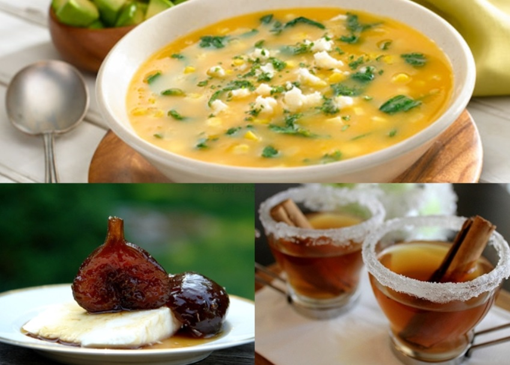
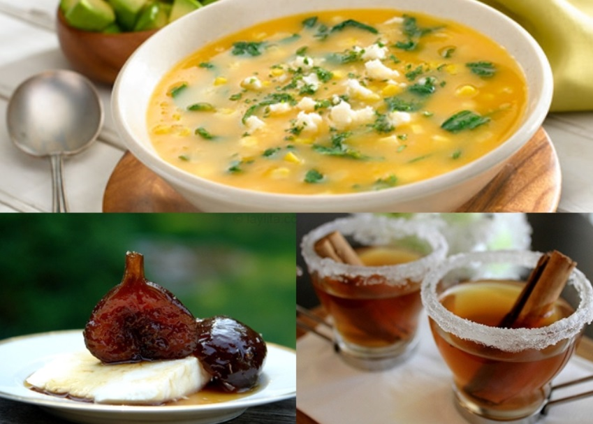
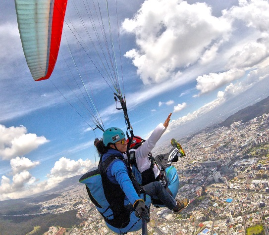
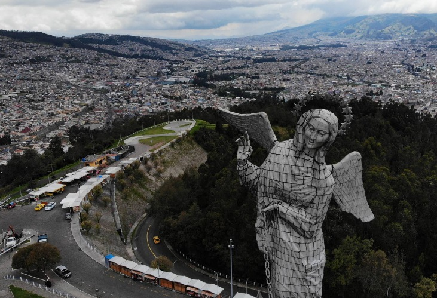

Ruta del Paladar Quiteño
Deléitate con los sabores auténticos de Quito en un viaje culinario sin igual.
Bienvenido a la capital eterna de Ecuador, un lugar donde la historia, la cultura y la naturaleza se encuentran.
Deléitate con los sabores auténticos de Quito en un viaje culinario sin igual.
Aventuras y emociones fuertes te esperan en cada rincón de la capital.
Conoce la rica herencia cultural y artística de Quito a través de sus museos y espacios culturales.
